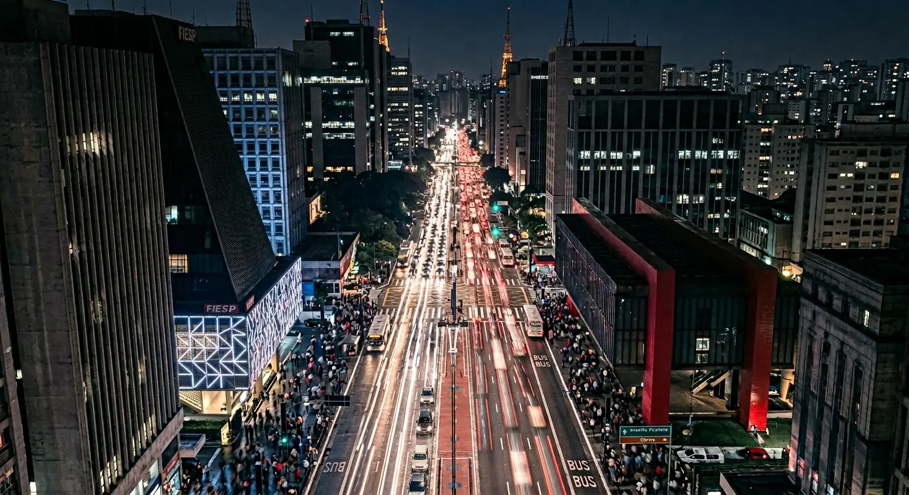
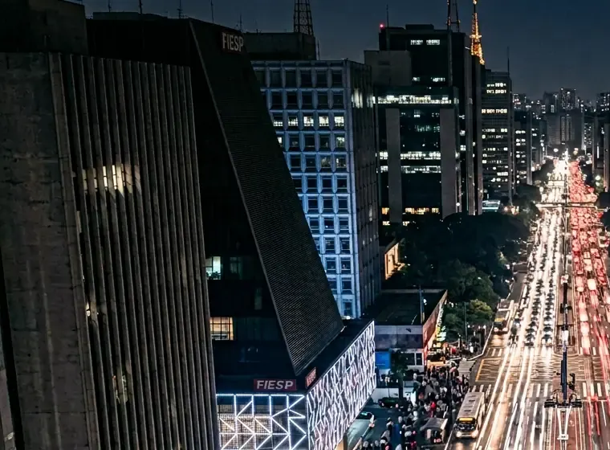
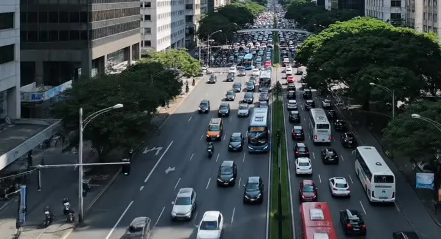
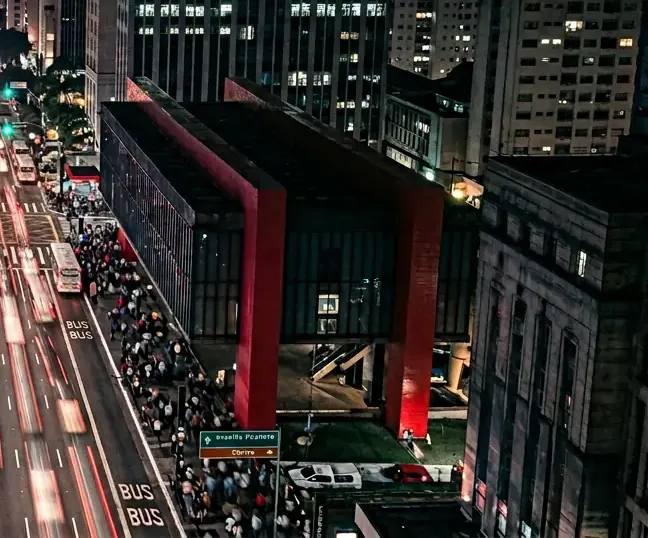

Semáforos que aprendem com o trânsito.
O SmartFlow é uma proposta para quem atravessa São Paulo todos os dias. Você reporta onde o trânsito trava e os semáforos passam a se ajustar à fila real, em vez de seguir sempre o mesmo tempo.
Quanto tempo o trânsito leva de você?
Considera 240 dias de deslocamento por ano (5 por semana, 48 semanas). A média de São Paulo é 2h25 por dia, segundo a pesquisa citada mais abaixo.
O problema é diário e pesa mais para quem depende do ônibus
O cidadão que o SmartFlow quer ajudar é quem se desloca todos os dias em São Paulo para trabalhar ou estudar. Muitos deles viajam de ônibus, que dividem as mesmas avenidas e os mesmos semáforos que os carros.
Nossa hipótese é que parte desse tempo se perde em semáforos de ciclo fixo, que não enxergam a fila. O simulador mostra, com dados ilustrativos, o quanto um ajuste poderia devolver.

Como funciona, em três passos
-
Você reporta
Conta onde o semáforo demora ou onde a fila se repete. É um formulário curto, com mensagens claras.
-
O sistema lê o fluxo
Os reportes e as câmeras que a cidade já tem mostram onde o trânsito trava de verdade.
-
O semáforo se ajusta
O tempo do verde muda conforme a fila, e o resultado fica visível para a cidade e para você.
Radar dos corredores
Cada ponta é uma avenida de São Paulo. Quanto mais longe do centro, maior o atraso médio por viagem no pico. Ligue o SmartFlow para ver quanto cada corredor encolheria.
- 0 minatraso médio por viagem nos 13 corredores
- 0%redução média esperada com o SmartFlow
- 0 minmaior atraso:
Hoje Com SmartFlow. Ver todos os dados no Simulador
Dados ilustrativos. Os atrasos e ganhos são valores de demonstração do protótipo, não medições da CET.
A cidade que o SmartFlow quer destravar

Avenida Paulista, onde milhares de pessoas passam todos os dias. 
Carros e ônibus dividem as mesmas faixas e os mesmos semáforos. 
Quem anda a pé também espera o verde, e espera junto.
Objetivos de Desenvolvimento Sustentável ligados ao projeto
-
ODS 11: cidades e comunidades sustentáveis
Transporte mais ágil e previsível para quem depende dele todos os dias.
-
ODS 13: ação contra a mudança global do clima
Menos tempo parado com o motor ligado significa menos emissão em marcha lenta.